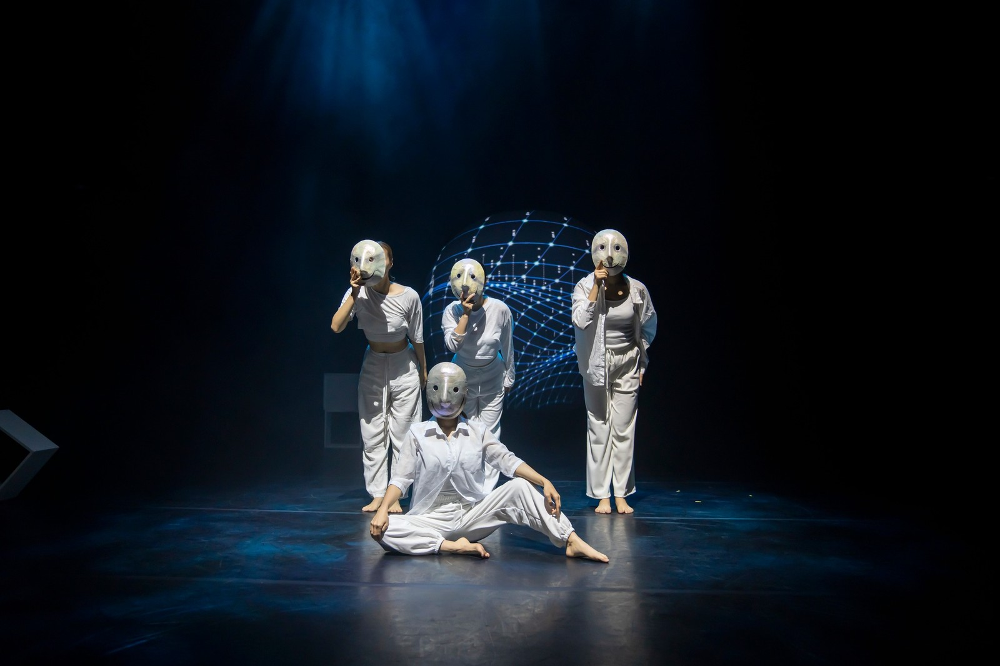
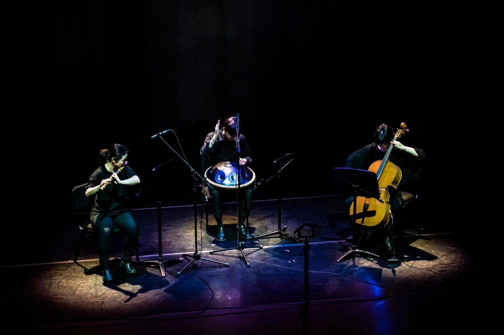

PERFORMANCE · ART FILM · ARCHIVE
K-CULTUREIN MOTION
공연에서 태어난 감각을 기록하고,다음 문화의 시간으로 확장합니다.

01 / K-CULTURE
무대의 순간을 살아 있는 기록으로 잇고새로운 문화의 흐름을 펼쳐갑니다무대의 순간을 살아 있는 기록으로 잇고 새로운 문화의 흐름을 펼쳐갑니다
ARA KOREA의 K-Culture 아카이브는 공연에서 생성된 소리와 움직임, 빛의 감각을 사진과 포스터, 영상으로 이어갑니다. 서로 다른 기록은 작품의 배경과 시간을 입체적으로 보여주며 다음 창작을 위한 문화적 자원이 됩니다.
02 / THREE PATHS
Explore the Archive
장면과 기록, 움직이는 이미지로 이어지는세 가지 아카이브를 만나보세요.

03 / ARCHIVE IN MOTION
FROM STAGE TO CULTURAL MEMORY
The Stage Continues
한 번의 공연은 사진과 영상, 디자인과 서사를 만나 더 넓은 시간으로 이동합니다. ARA KOREA는 각 매체의 고유한 언어를 연결해 작품이 지닌 감각과 문화적 맥락을 지속적으로 확장합니다.
Enter the video archive04 / RECORDS